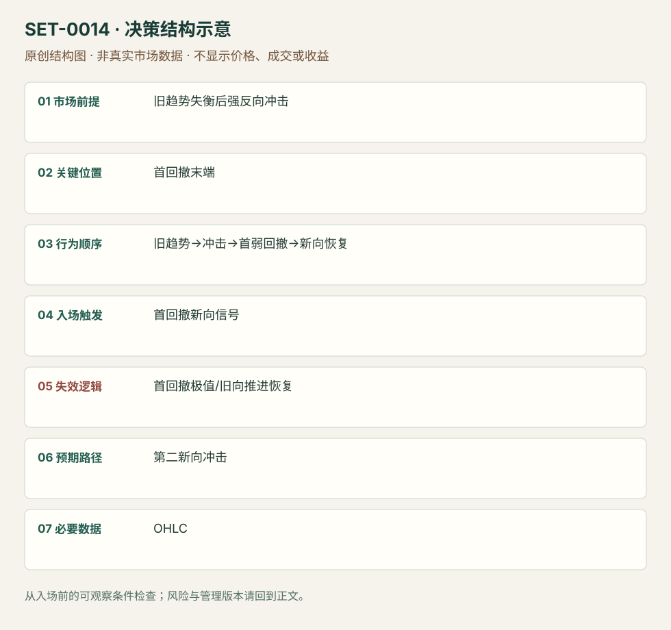

趋势第一次反向冲击后的首回撤
Anti / Snap Pullback · SET-0014 · reviewed · v1.0.0
盈利证据：not_established。审查范围与来源版本见第13节；未知字段保留缺失原因。
1. 名称与快速概览
旧趋势已有失衡迹象，第一次强反向冲击打断它；首个较弱反向回撤不能恢复旧推进时，考虑新方向恢复。冲击被完全否定会使假说失效。
记录口径：PA core；必要数据 OHLC、volume_optional。名称性质：编辑性描述名，英文保留来源术语以便检索。reviewed 只表示本条规则与证据记录审查通过，盈利状态为 not_established。
2. 本质与行为假说
必须先看到新方向的冲击，不能在旧趋势里猜顶底。“新趋势”仍是候选；被打断的趋势也可能转为宽区间。
3. 适用市场与环境
旧趋势已有延伸，冲击相对于先前摆动明显增强，首回撤与冲击形成不对称。只是普通回撤、尚未改变旧推进的不适合。
来源实用市场：美股开盘1分钟（SAI）、Grimes结构教学不限市场。
Session：美股/ES现金参考段 09:30–16:00 America/New_York；收盘前平仓。期货夜盘单独建背景，不将其并入开盘区间。
跨市场：本版不主张已经验证的跨市场迁移；更换市场必须重定数据来源、流动性与session。
4. 出现前的观察清单
必要：旧趋势、第一强反向波、其后的首回撤。增强：缩小实体/量能反向回撤。否决：多个来回后才追认首回撤，或冲击很小。
5. 形成过程与状态转换
旧趋势→延伸/高潮→首次强反向冲击→首个较弱回撤→新向恢复→管理；回撤重建旧向连续推进则取消。
6. Entry trigger 与执行方式
Grimes用结构界定Anti，指标版本为辅助。本研究将首回撤结束后的顺冲击方向信号端点作为可记录触发；SAI可在破下行趋势后回测试探买盘恢复。具体形式须标来源。
7. Invalidation 与止损逻辑
保护首回撤极值，冲击起点是更宽环境否定；二者不能混为同一风险。首回撤极值破坏后不因希望大反转继续拖延。
8. Exit、target 与 trade management
先看冲击极值及下一已知障碍；SAI开盘下行反转常遇VWAP与盘前阻力，见弱可部分退出。冲击后变平衡则用区间管理。
9. 常见 variations
Linda Raschke指标Anti未完整复核，本版只采用Grimes结构释义。First Cross不在未读原始规则时当确证别名。
10. 失败方式与不交易条件
正常亏损：冲击后首回撤继续旧趋势。未成立：没有强冲击。偏离：先抄底后套Anti名称，或回撤已多轮。需要记录冲击的相对尺度。
11. 与相近 setups 的区别
12. 图表与案例解读
已查看SAI页23：左图早盘有下行且量增，右图下行趋势线被突破后出现回测并继续恢复；作者图是具体下行反转例，不能据此验证所有Anti。图上后来接近VWAP的上涨是回顾，日期未核对；较强反向波与较弱回测在入场前已可比较。
- [VIS-000015] 来源PDF第23页图表；定位：PDF页序 23。早盘下行破坏与首回测的日内类比；不要求MTR那样再测旧极值。 验证：chart_viewed_pdf_page。
本地原创示意（VIS-000071，非真实市场数据）：

小屏阅读可打开原尺寸示意图并缩放。

此图用于对照识别顺序与风险定义；不计入真实案例覆盖率。
视觉材料元数据与查看范围
- VIS-000015 · real_source_chart / structure_and_trigger / chart_viewed_pdf_page
品种：未知/不适用；日期：未知/不适用；周期：1分钟；时区：未知/不适用
品种未在画面中核对；日期未在画面中核对；时区未在画面中核对；作者示例；不是独立成交审计 - VIS-000071 · synthetic_structure_diagram / illustration_only / generated_not_market_evidence
品种：未知/不适用；日期：未知/不适用；周期：未知/不适用；时区：未知/不适用
无真实品种、日期或价格：这是结构示意
13. 证据、分歧与未知项
Grimes结构与SAI日内版本相互补充，SAI未使用Anti这个名称。触发操作化、时间平仓属研究补充；未核对Raschke原始书/课程。
- [EVD-000023] Adam Grimes，《Fundamental Trading Patterns》，SRC-0017；定位：Snap Pullbacks / Antis。支持：旧趋势延伸或高潮后首次尖锐反向冲击，随后首回撤是新趋势候选
- [EVD-000024] SAI Trades，《My Experience: Trading the Open Playbook》，SRC-0013；定位：PDF页23。支持：早盘下行被破坏，回测破坏位置后买盘恢复的日内反转版本
审查边界：来源份数与独立核心核验分开；当前类别为 independent_context_only。正文中的概念、官方事实、衍生解说或同族资料只按其支持范围使用。
14. 可用于复盘的检查表
- ☐ 下单前的前提可核对：旧趋势失衡后强反向冲击
- ☐ 事前标记位置：首回撤末端
- ☐ 行为按顺序出现：旧趋势→冲击→首弱回撤→新向恢复
- ☐ 实际触发符合选定版本：首回撤新向信号
- ☐ 事先写明本次否定条件：首回撤极值/旧向推进恢复
- ☐ 目标/路径只用当时已知信息：第二新向冲击
- ☐ 数据满足 OHLC；记录时间、点差、滑点、队列和未成交
- ☐ 记录截止平仓及规则偏离；正常亏损不事后改成“未成立”
15. 后续验证问题
固定冲击相对强度与弱回撤标准，比较转区间和形成新趋势的结果，不把二者合并为成功。
双向相关导航
- SET-0008 旧趋势破坏后再测极值的主要反转 Anti在第一冲击后首回撤即可考虑；本条要求旧极值再次接受检验。
- SET-0009 强推进后的首次微型回撤 微回撤需要未有普通回撤的强推进，但不要求之前的旧趋势被打断。
- SET-0032 多阶段公告的净信息重新判断 0014 可仅由价格冲击后弱回调触发；本条必须可核对新增信息。